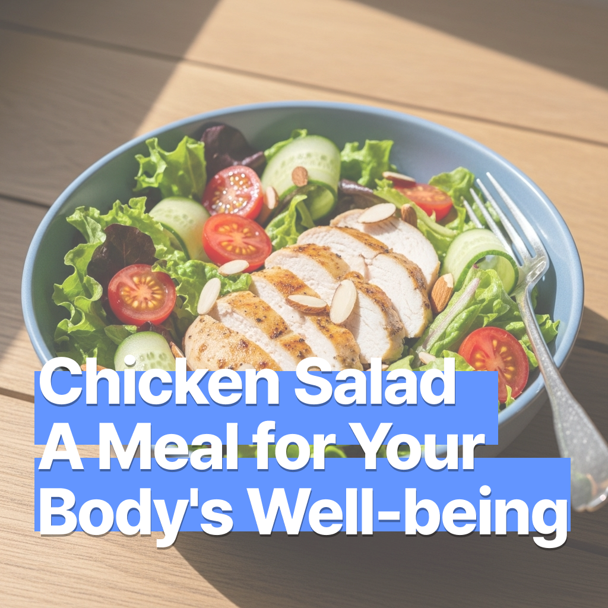

치킨 샐러드 – 건강을 담은 몸을 위한 식사
2025-07-16

치킨 샐러드 – 건강을 담은 몸을 위한 식사
몸에 좋다는 건 알아도 익숙해지기 어려운 식재료들이 있습니다. 하지만 고소한 드레싱과 어우러진다면 어떨까요? 닭가슴살과 다양한 채소. 드레싱으로 만들어진 균형잡힌 한끼를 시작해보세요.
🛒 재료 (2인분 기준)
- 닭가슴살 1~2장
- 로메인 또는 양상추
- 방울토마토
- 오이
- 삶은 달걀
- 아보카도 (선택)
- 올리브유
- 발사믹 식초 또는 레몬즙
- 소금, 후추
- 견과류 (아몬드, 호두 등, 선택)
🔪 재료 손질
닭가슴살: 소금·후추로 간하고 팬 또는 에어프라이어에 구운 뒤 식혀서 슬라이스
채소: 흐르는 물에 씻고 물기 제거 후 먹기 좋게 자르기
방울토마토: 반으로 자르기
오이: 슬라이스
삶은 달걀: 식힌 뒤 4등분
아보카도: 껍질과 씨 제거 후 슬라이스
견과류: 팬에 살짝 볶거나 그대로 토핑으로 활용
🥣 만드는 법
- 볼에 채소를 담고, 토마토·오이·달걀·아보카도·닭가슴살·견과류를 고르게 올립니다.
- 올리브유, 발사믹 식초 또는 레몬즙, 소금·후추를 섞어 만든 드레싱을 샐러드에 골고루 뿌립니다.
- 가볍게 섞거나 접시에 담아 바로 즐겨주세요.
⚠️ 주의사항
견과류, 달걀, 아보카도, 드레싱 재료 등은 알레르기나 소화가 민감한 분들께 영향을 줄 수 있습니다.
내 몸에 맞는 건강 재료를 찾는 것이 중요합니다.
새로운 재료를 시도하기 전에는 구성 성분을 확인하거나 알러지 관련 표시를 꼭 살펴주세요.
💡 팁
- 요거트를 한 스푼 넣으면 드레싱이 더 부드럽고 고소해져요.
- 닭가슴살 대신 훈제 치킨이나 삶은 닭다리살을 사용해도 좋아요.
- 병아리콩, 렌틸콩, 퀴노아 등을 더하면 포만감 있는 식사가 됩니다.
- 남은 샐러드는 샌드위치나 랩으로 활용해도 맛있어요.
샐러드로도 충분히 든든한 식사를 하실 수 있습니다.